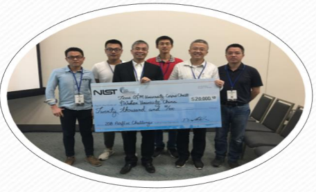
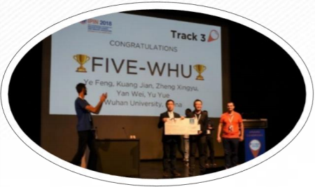
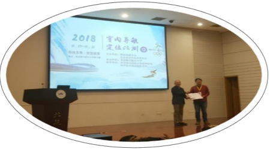
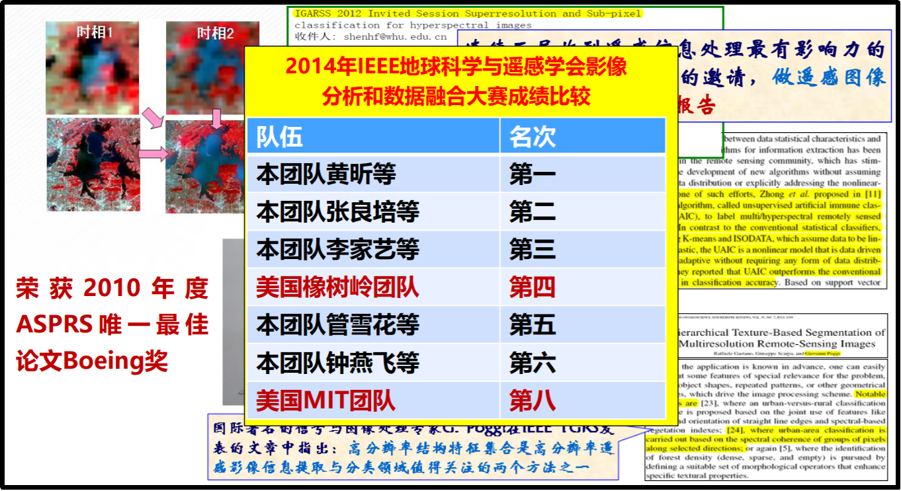

研究成果曾两次被导航领域全球最著名的杂志“GPSWorlds”选为封面专题报道，以及CCTV科技专栏采访报道。该团队获得了目前国际和国内上多个重要室内定位比赛的大赛冠军，其中包括：美国国家标准局（NIST）主办的PerLoc赛事，国际室内定位大会（IPIN）以及由科技部国家遥感中心主办的首届全国室内导航定位比测活动。
PerfLoc国际室内定位比赛获得冠军赛后合影

2018美国标准局 室内定位比赛获得冠军后合影

2018国际室内定位 大会手机组比赛获得冠军合影

2018首届全国室内导航 定位比测(场景一）获得冠军合影
曾开发整套基于智能手机的三维无缝导航技术，并在上海世博园区示范，该成果入选科技部国际合作成果展。此外，所内研究人员研发了绝缘子损伤在线实时检测和树障安全距离人工智能在线计算方法，实现了巡检、故障判读、报表输出实时处理，极大地降低了劳动强度。

电力走廊无人机巡检与智能监测系统
建立了电力走廊多要素的精准定位、识别与建模以及3D空间关系计算模型一体化的软硬件系统，解决了电力走廊安全风险的定位和预警。

电力走廊无人机巡检与智能监测系统
这是国内外首次规模化的大型无人机电力巡检应用涵盖范围涉及15个省市地区，巡检线路约20000公里，巡检里程超50000公里，产生的经济效益超2亿。

依托国内优势单位共同组织团队，实施了珞珈一号系列科学试验卫星工程，开展PNTRC系统重大关键技术攻关。
珞珈一号01星 已发射在轨正常运行 主要用于夜光遥感 和低轨导航信号增强，这是我国首颗专业夜光遥感卫星同时也是国际上首次低轨卫星对GNSS卫星进行信号增强。01星的成功发射，为科学实验提供了有力的支撑，让遥感从对地观测到了对人（社会）观测的时代。已在用户GDP、人口、电力消耗、碳排放、城市扩张等方面得到了应用。已向3000多用户免费分发了91000景数据。用户包括联合国、美，英，德，法等16个国家，已在地震，森林火灾，难民安置等应急求援服务中得到应用。
珞珈一号02星 2020年发射进入工程研制 主要用于多角度SAR和低轨导航信号/信息增强，这是国际首次开展多角度、双基地SAR试验验证同时也是国际上首次开展低轨卫星对GNSS卫星进行信息/信号增强。
珞珈一号03星 2020年发射进入工程研制主要应用点是光学视频 、在轨智能处理 和星间/星地通信传输，开展了遥感在轨智能处理技术验证，同时计划开展“遥感影像（视频）实时上手机” 试验。
同时我所研究人员提出了高空间和高光谱分辨率的遥感影像智能化解译理论与算法，支持了国家的重大专项，得到国际同行的高度认可。

2014年IEEE地球科学与遥感学会影像分析和数据融合大赛成绩比较
在机器人感知、定位与导航方面，研制了无人驾驶车辆平台、轻小型无人测图机器人等机器人平台，采用多传感器集成、深度学习和3D-SLAM等技术，打造出会识路、认路、记路的智能机器人，能够在陌生的环境下快速绘制出二维/三维高精度地图，实现自主导航定位、路径规划、智能避障、自动转向及楼梯爬坡等强大功能，主要应用有变电站智能巡检机器人、智慧园区安保巡逻机器人、智能物流机器人、新零售导购机器人等，为智慧城市建设提供智能化、安全化、低成本的优质AI服务。连续10年参加国家自然科学基金委组织的“中国智能车未来挑战赛”、连续3届参加军方的“无人平台赛”，并取得总分第二、单项第一的好成绩、连续2年参加全国互联网+大学生创新创业大赛，并接受了包括CCTV、CGTV、CETV在内的多家媒体的专访与报道，同时获得湖北省金奖、全国银奖、第四届互联网+全国大学生创新创业大赛全国总决赛银奖、2019光谷青桐汇“AI能创未来奖”在内的多项比赛荣誉获得。获得专利及知识产权20余项，国家标准1项，国家科技发明二等奖、湖北省科技进步一等奖、二等奖、教育部科技进步一等奖、中国测绘科技进步奖、中国地理信息产业协会科技进步奖等多项。
自动驾驶

快递机器人